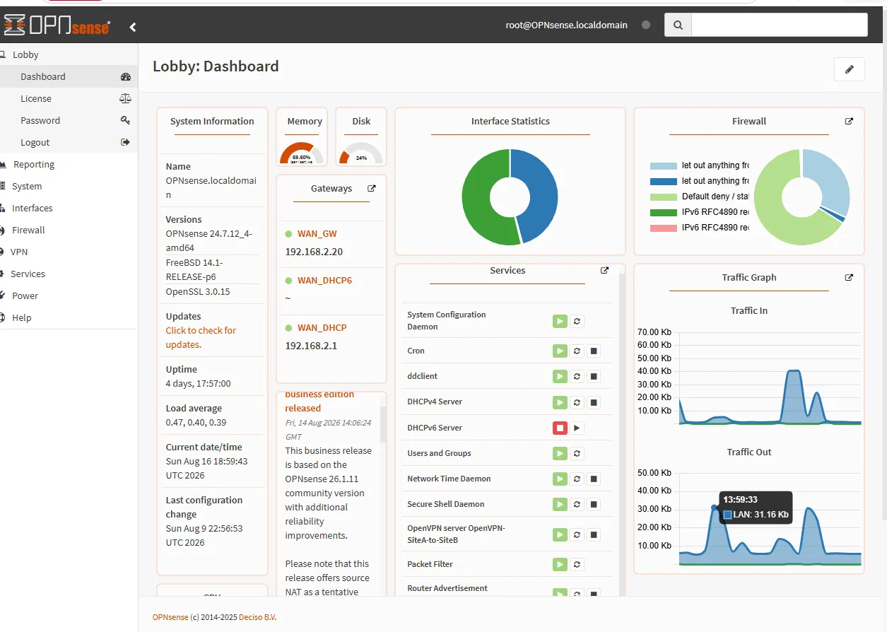
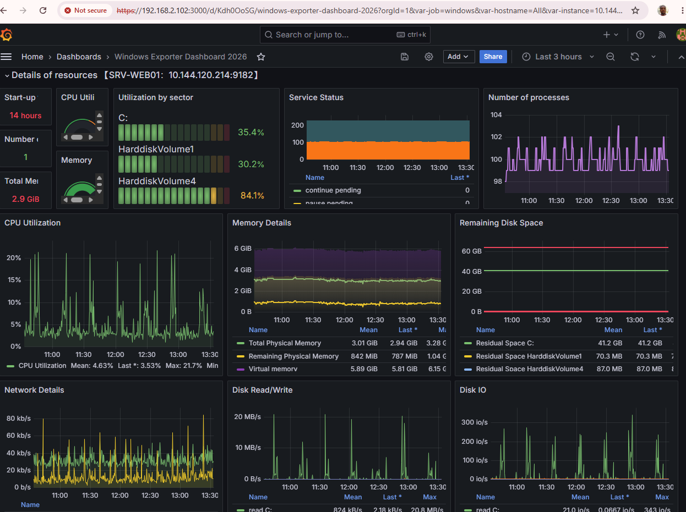

Pare-feu périmétrique, virtualisation haute disponibilité, SOC complet (SIEM/XDR/NDR/EDR) et supervision temps réel — déployés et opérés de bout en bout.
Internet │ ▼ [OPNsense] (FreeBSD, pf, Unbound, DHCP, NAT, VPN) │ ├── LAN 192.168.1.0/24 ── SRV-WEB01 (Windows Server 2022 + Huntress + windows_exporter) │ └── LAN 192.168.2.0/24 ── DC-SVR, SVR-MON01, Wazuh-Manager (Ubuntu), Security Onion │ └── Wazuh Indexer/Dashboard (OpenSearch) VPN distant ── OpenVPN / WireGuard ── accès mobile au LAN DNS dynamique ── ddclient → Cloudflare (vpn.daddyconnectit.com) Monitoring ── Prometheus + exporters → Grafana


Infrastructure 100 % opérationnelle en production
Site web public derrière Cloudflare Zero Trust — zéro port entrant ouvert
Détection des menaces en temps réel (SIEM/XDR + EDR)
Sauvegardes automatisées et haute disponibilité (réplication Hyper-V)
Active Directory pour la gestion centralisée des identités
Supervision continue via Grafana + Prometheus, alertes automatisées
Architecte de solutions multi-cloud avec plus de 10 ans d'expérience en technologie, depuis mes débuts en 2014 dans la digitalisation chez FabricaInfo (Fortaleza, Brésil). Diplômé EDE en télécommunications-électronique, avec 8+ ans d'expérience combinée en télécommunications et en électromécanique. Ce laboratoire personnel illustre ma spécialisation continue vers l'infrastructure IT et la cybersécurité, en complément de mon expertise en architecture cloud multi-plateforme et de mon expérience terrain en déploiement réseau.